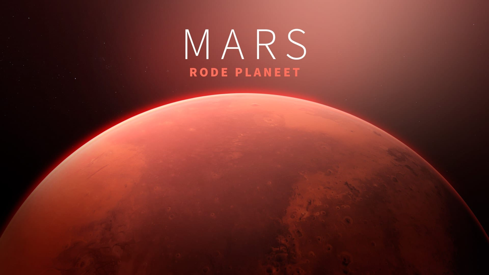

Mars — The Red Planet
Mars is the fourth planet from the Sun and is often called the Red Planet because of its reddish appearance, caused by iron oxide (rust) on its surface.

🚀 Exploration
Scientists are very interested in Mars because it may have once had conditions suitable for life. NASA rovers like Perseverance and Curiosity are exploring the planet to study its geology and search for signs of past life.